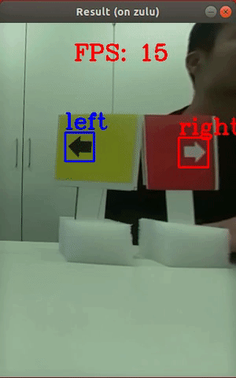

SELF-DRIVING VEHICLES WITH MACHINE LEARNING AND DEEP LEARNING
This project is developed by a 4-members team of Hochschule Rhein-Waal’s Robotic Lab to participate in European Autonomous Vehicle Traffic Competiton - JRC AUTORAC in Italy, 2020. As the team captain, I am in charge of implementeing Machine Learning (ML) in self-driving behavior, traffic detection/recogition and managing team’s activies.
Due to the security and publication reasons from my universy (our main sponsor), I can only demonstrate here some of our works with video and pictures. Source code and explaination will be added after our papers are published.
Self-driving mini rover with Deep Learning
Sign detection and recogition with Mobilenet CNN

Sign detection and recogition with Haar Cascade

Moving object detection